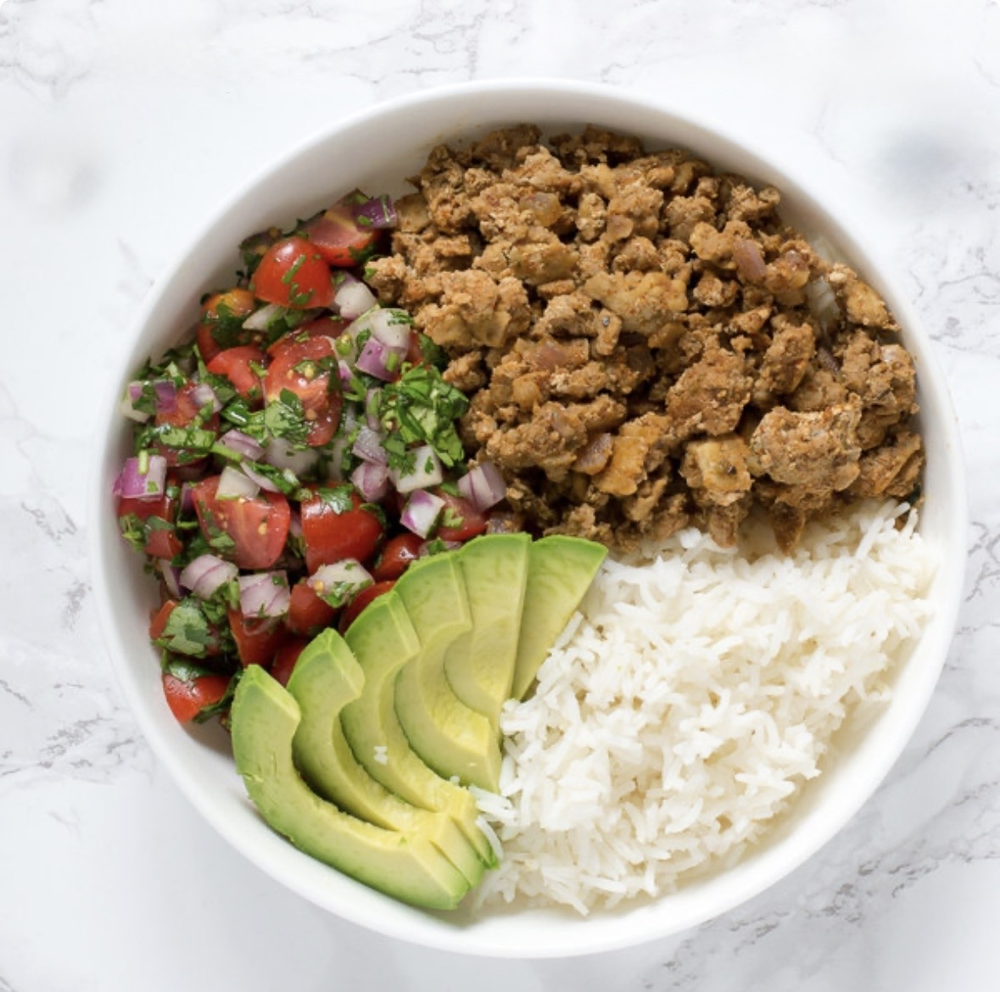

Ingredients
- 1 lb ground turkey
- 1 tablespoon olive oil
- 1 teaspoon kosher salt
- ½ teaspoon pepper
- 1/4 cup all-purpose flour
- 1 teaspoon cumin
- ½ teaspoon garlic powder
- ½ teaspoon chili powder
- ½ teaspoon onion powder
- ¼ teaspoon oregano
- ¼ teaspoon paprika
- 1 can (14.5 oz) beef broth
- 1 can (8 oz) tomato sauce
- 1 can (15 oz) black beans drained & rinsed
- 1 cup frozen corn
Instructions
- In a large nonstick skillet, over medium high heat, cook the ground turkey, olive oil, kosher salt & pepper until cooked through and no longer pink, breaking the meat into small pieces as it cooks. Drain any excess grease from the pan.
- Add the cumin, garlic powder, chili powder, onion powder, oregano, paprika, and flour. Stir the mixture constantly for 1 minute while it cooks. It will be crumbly (that's ok).
- Slowly add the beef broth, a little bit at a time, while whisking to let it thicken up.
- Add in the tomato sauce and stir to combine. Bring to a boil.
- Once boiling, stir in the black beans and corn.
- Turn the heat down to medium, and let it simmer for at least 20 minutes or until thickened.
- Serve over rice and top with all your favorite taco toppings.